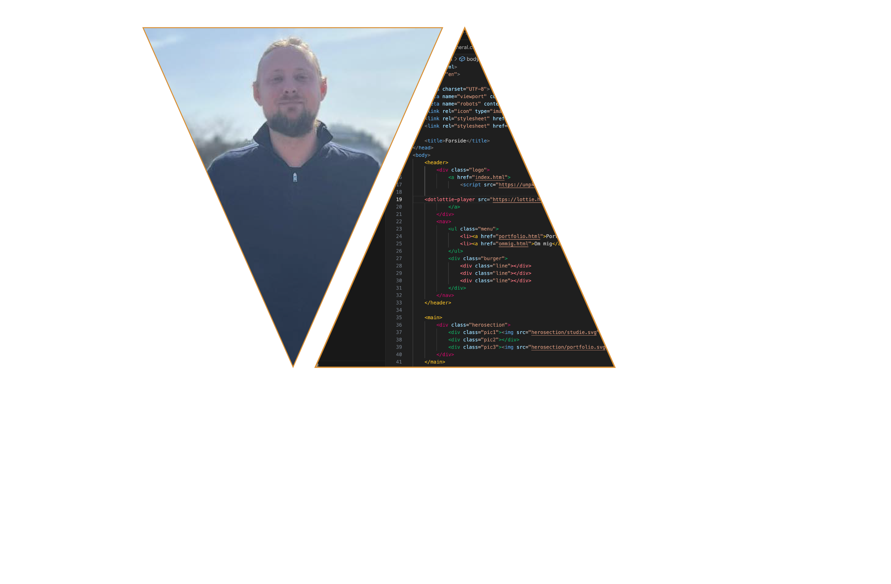

Velkommen til min eksamensopgave, min studie portfolio.
Jeg vil igennem dette website præsentere jer for de teamer, vi har været igennem det sidste halve år.
Jeg vil beskrive hvilke elementer i div. opgaver, der har givet mig kompetencerne til at lave det slutprodukt i ser her.
Portfolioen er bygget op som ”tidslinje”. Tidslinjen er fra første til sidste tema/opgave, og ved hver opgave bliver der præsenteret de elementer, der til sidst er brugt i dette eksamensite.
Enjoy!
